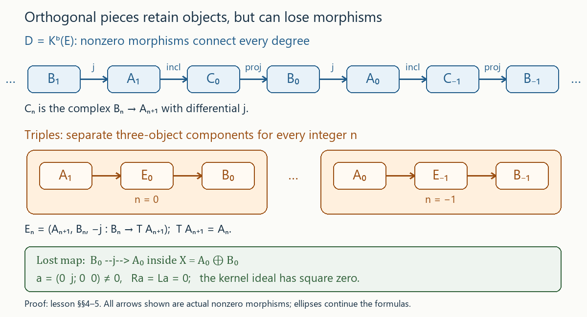

Draft lesson.
Orthogonal localization and the morphisms between pieces
Original text public domain (CC0).
A distinguished triangle can separate an object into two orthogonal pieces. The pieces determine adjoints and quotient categories. They also determine the object up to isomorphism once its connecting map is retained. Morphisms require more information: a map from the second piece to the first can disappear when we record only the two component maps.
Let \(D\) be a locally small triangulated category with translation \(T\), and let \(N\) be a null system: a replete full subcategory containing zero, invariant under translation in both directions, and satisfying triangle two-out-of-three. Write \(Q:D\to D/N\) for its Verdier quotient. For quotient constructions, choose an ambient universe containing all the objects, arrows and denominator diagrams involved, and take quotient Hom sets in that universe. Local smallness in the starting universe alone does not ensure that these Hom sets belong to the starting universe. The quotient Hom sets, roofs, equality tests, object kernel and actual completion with a specified last map are proved in Null systems, roofs and the retract kernel. The exact sequences for either Hom variance are proved in Triangles, finite universal maps and cohomology boundaries; Translations, coherent powers and universal triangle comparisons, Theorem 6.2, proves the two-isomorphism test. We use the actual split maps from Split triangles, idempotent telescopes and semisimple structures.
1. Orthogonals and two quotient Hom tests
Define the replete full subcategories
\[ \begin{aligned} N^\perp&=\{B:\operatorname{Hom}_D(A,B)=0\text{ for every }A\in N\},\\ {}^\perp N&=\{A:\operatorname{Hom}_D(A,B)=0\text{ for every }B\in N\}. \end{aligned} \tag{1.1} \]The zero Hom group means that every such morphism is zero. Since \(N\) is shift invariant, its orthogonality conditions also kill all shifted Hom groups.
Lemma 1.1. Both orthogonals are null systems and are closed under retracts.
Proof. They contain zero and are invariant under isomorphisms. For \(B\in N^\perp\), translation gives \(\operatorname{Hom}(A,TB)\simeq\operatorname{Hom}(T^{-1}A,B)=0\) and \(\operatorname{Hom}(A,T^{-1}B)\simeq\operatorname{Hom}(TA,B)=0\). For \(A\in{}^\perp N\), the corresponding identities are \(\operatorname{Hom}(TA,B)\simeq\operatorname{Hom}(A,T^{-1}B)=0\) and \(\operatorname{Hom}(T^{-1}A,B)\simeq\operatorname{Hom}(A,TB)=0\). Here inverse translations and their comparisons mean the chosen inverse equivalence and its unit and counit.
Given a distinguished triangle \(X\to Y\to Z\to TX\), apply \(\operatorname{Hom}(A,-)\) for every \(A\in N\). If two vertices lie in \(N^\perp\), their Hom groups and the adjacent shifted groups vanish. Exactness forces the third Hom group to vanish. This treats each of the three positions, using rotation for the first or second. Applying \(\operatorname{Hom}(-,B)\) for every \(B\in N\) proves the same conclusion for the left orthogonal.
Finite biproducts satisfy the conditions because Hom turns them into direct sums of groups. If \(X\) is a retract of \(Y\), its Hom group in either variance is a retract of the corresponding group for \(Y\). A retract of zero is zero. This proves the final assertion and all the null-system properties. \(\square\)
Lemma 1.2. For arbitrary \(X\in D\) and \(B\in N^\perp\), the canonical map is a bijection:
\[ \operatorname{Hom}_D(X,B)\longrightarrow \operatorname{Hom}_{D/N}(QX,QB). \tag{1.2} \]For any null system \(M\), any \(A\in{}^\perp M\), and arbitrary \(X\in D\), there is also a canonical bijection
\[ \operatorname{Hom}_D(A,X)\longrightarrow \operatorname{Hom}_{D/M}(Q'A,Q'X), \tag{1.3} \]where \(Q':D\to D/M\).
Proof. Represent the first quotient morphism by an incoming roof \(X\xleftarrow{s}U\xrightarrow{a}B\), with a distinguished completion \(U\xrightarrow{s}X\to C\to TU\) and \(C\in N\). The exact segment
\[ \operatorname{Hom}(C,B)\longrightarrow\operatorname{Hom}(X,B) \xrightarrow{s^*}\operatorname{Hom}(U,B) \longrightarrow\operatorname{Hom}(T^{-1}C,B) \]has zero outside groups. Thus there is a unique \(f:X\to B\) with \(fs=a\), and the roof equals \(Qf\). If \(Qf=0\), the roof equality test supplies another denominator \(t:V\to X\) with \(ft=0\). The same exact segment makes precomposition by \(t\) injective, so \(f=0\). Applying this to differences proves injectivity.
For (1.3), use an outgoing roof \(A\xrightarrow{a}V\xleftarrow{s}X\), with a completion \(X\xrightarrow{s}V\to C\to TX\), \(C\in M\). The exact segment is
\[ \operatorname{Hom}(A,T^{-1}C)\to\operatorname{Hom}(A,X)\to \operatorname{Hom}(A,V)\to\operatorname{Hom}(A,C). \]Its outside groups vanish, so postcomposition by \(s\) is bijective. It supplies the unique numerator from \(A\) to \(X\). Outgoing cancellation and the injectivity of this same map prove injectivity of (1.3). Both constructions are natural because the maps are induced by the quotient functors. \(\square\)
2. Seven faces of an orthogonal decomposition
For the rest of this section suppose that \(N\) is closed under direct summands: \(X\oplus Y\in N\) implies \(X,Y\in N\). Put \(M=N^\perp\), let \(\iota:N\to D\) and \(\jmath:M\to D\) be the inclusions, and put \(Q':D\to D/M\). The quotient object kernels are exactly \(N\) and \(M\). Indeed, the quotient kernel theorem gives the retract closure; every actual retract in a triangulated category has an actual complement, and the stated assumption closes \(N\) under these retracts. Lemma 1.1 already closes \(M\).
Theorem 2.1. The following seven conditions are equivalent.
| Condition | Assertion |
|---|---|
| (a) | The restriction \(M\to D/N\) of \(Q\) is an equivalence. |
| (b) | \(Q\) has a right adjoint. |
| (c) | \(\iota\) has a right adjoint \(R:D\to N\). |
| (d) | Every \(X\) has a distinguished triangle \(A_X\to X\to B_X\to TA_X\), with \(A_X\in N\), \(B_X\in M\). |
| (e) | The restriction \(N\to D/M\) of \(Q'\) is an equivalence. |
| (f) | \(Q'\) has a left adjoint, and \(N={}^\perp M\). |
| (g) | \(\jmath\) has a left adjoint \(L:D\to M\), and \(N={}^\perp M\). |
Proof from (d) to the other six conditions. Fix one triangle for each object, written
\[ A_X\xrightarrow{i_X}X\xrightarrow{p_X}B_X \xrightarrow{\delta_X}TA_X. \tag{2.1} \]Orthogonality and Hom exactness give natural bijections, for every \(A\in N\) and \(B\in M\),
\[ \begin{aligned} \operatorname{Hom}(A,A_X)&\xrightarrow{i_X\circ-}\operatorname{Hom}(A,X),\\ \operatorname{Hom}(B_X,B)&\xrightarrow{-\circ p_X}\operatorname{Hom}(X,B). \end{aligned} \tag{2.2} \]The two adjacent groups in the first sequence are \(\operatorname{Hom}(A,T^{-1}B_X)\) and \(\operatorname{Hom}(A,B_X)\); in the second they are \(\operatorname{Hom}(TA_X,B)\) and \(\operatorname{Hom}(A_X,B)\). All four vanish.
Set \(RX=A_X\). For \(f:X\to Y\), define \(Rf\) as the unique map with \(i_YRf=fi_X\), using the first bijection. Uniqueness proves the identity and composition laws, and also additivity. The same bijection is the natural adjunction \(\iota\dashv R\), proving (c). Set \(LX=B_X\), and define \(Lf\) by \((Lf)p_X=p_Yf\), using the second bijection. Uniqueness again proves functoriality and additivity, and the second bijection gives \(L\dashv\jmath\).
We have \(N\subset{}^\perp M\) by definition of \(M\). If \(X\in{}^\perp M\), use (2.1) and the segment
\[ \operatorname{Hom}(TA_X,B_X)\longrightarrow \operatorname{Hom}(B_X,B_X)\longrightarrow \operatorname{Hom}(X,B_X). \]Both outside groups vanish. Thus \(1_{B_X}=0\), so \(B_X\) is zero. The zero-cone test makes \(i_X\) invertible, and repleteness puts \(X\) in \(N\). Hence \(N={}^\perp M\), proving the extra assertion in (g).
Lemma 1.2 makes \(M\to D/N\) fully faithful. Since \(Qi_X\) has zero source, the image of (2.1) shows that \(Qp_X:QX\to QB_X\) is an isomorphism. Thus this restriction is essentially surjective, proving (a). Similarly, (1.3) makes \(N\to D/M\) fully faithful, and \(Q'i_X:Q'A_X\to Q'X\) is an isomorphism. This proves (e).
Choose a quasi-inverse \(H:D/N\to M\) to the equivalence in (a), with a natural comparison \(Q\jmath HZ\simeq Z\). Lemma 1.2 gives
\[ \operatorname{Hom}_D(X,\jmath HZ) \simeq\operatorname{Hom}_{D/N}(QX,Q\jmath HZ) \simeq\operatorname{Hom}_{D/N}(QX,Z). \]This is natural in both variables, so \(\jmath H\) is a right adjoint to \(Q\), proving (b). Choose instead a quasi-inverse \(K:D/M\to N\) in (e). Formula (1.3) gives \(\operatorname{Hom}_D(\iota KZ,X)\simeq \operatorname{Hom}_{D/M}(Z,Q'X)\). Thus \(\iota K\) is a left adjoint to \(Q'\). Together with the already proved equality \(N={}^\perp M\), this proves (f). This establishes all six implications out of (d).
Proof of (a) implies (d). Essential surjectivity supplies \(B\in M\) and an isomorphism \(QX\to QB\). Formula (1.2) lifts it to a map \(p:X\to B\). Complete \(p\) to a triangle. Its cone is killed by \(Q\), hence belongs to \(N\). An inverse rotation gives a distinguished triangle \(A\to X\xrightarrow pB\to TA\), with \(A\in N\). The comparison uses the inverse translation's unit and counit, so its last vertex is the actual \(TA\).
Proof of (b) implies (d). Write \(J\) for a right adjoint to \(Q\), with unit \(\eta_X:X\to JQX\) and counit \(\varepsilon_Z:QJZ\to Z\). For \(A\in N\), adjunction gives \(\operatorname{Hom}(A,JZ)\simeq\operatorname{Hom}(QA,Z)=0\). Thus \(JZ\in M\).
The counit is an isomorphism. To prove this rather than assume it, test it from every \(QX\). By (1.2), every map \(QX\to QJZ\) is uniquely \(Qf\) for a map \(f:X\to JZ\). Under adjunction, \(\varepsilon_ZQf\) is precisely the map corresponding to \(f\). Hence postcomposition by \(\varepsilon_Z\) is a bijection from every such test object. All quotient objects have the form \(QX\); taking identities gives a two-sided inverse to \(\varepsilon_Z\). The triangle identity \(\varepsilon_{QX}Q\eta_X=1_{QX}\) then makes \(Q\eta_X\) invertible. Its cone lies in \(N\), and inverse rotation produces (d) with \(B=JQX\).
Proof of (c) implies (d). Complete the counit \(i_X:\iota RX\to X\) to a distinguished triangle with third vertex \(B\). For every \(A\in N\), postcomposition by \(i_X\) is the adjunction bijection in (2.2). It is also a bijection when the test object is \(T^{-1}A\). The exact segment
\[ \operatorname{Hom}(A,\iota RX)\longrightarrow\operatorname{Hom}(A,X) \longrightarrow\operatorname{Hom}(A,B) \longrightarrow\operatorname{Hom}(A,T\iota RX) \longrightarrow\operatorname{Hom}(A,TX) \]has bijective first and last arrows. The last bijection follows by translating to the test \(T^{-1}A\); no exactness assertion about \(R\) is needed. Exactness forces the middle group to be zero. Thus \(B\in M\), proving (d).
Proof of (e) implies (d). Since \(N\subset{}^\perp M\), formula (1.3) applies to every object of \(N\). Essential surjectivity in (e) supplies \(A\in N\) and an isomorphism \(Q'A\to Q'X\). Formula (1.3) lifts it to \(i:A\to X\). Its cone belongs to the object kernel \(M\), so its completion is (d).
Proof of (f) implies (d). Write \(K\) for the given left adjoint to \(Q'\), with unit \(\zeta_Z:Z\to Q'KZ\) and counit \(e_X:KQ'X\to X\). For \(B\in M\), \(\operatorname{Hom}(KZ,B)\simeq\operatorname{Hom}(Z,Q'B)=0\). The specified equality in (f) puts \(KZ\) in \(N={}^\perp M\).
For every \(X\), (1.3) identifies \(\operatorname{Hom}_D(KZ,X)\) with \(\operatorname{Hom}_{D/M}(Q'KZ,Q'X)\). Adjunction identifies the same group with \(\operatorname{Hom}_{D/M}(Z,Q'X)\), by precomposition with \(\zeta_Z\). Thus this precomposition is bijective for every quotient test object. Taking identities supplies a two-sided inverse to \(\zeta_Z\). The triangle identity makes \(Q'e_X\) its inverse at \(Z=Q'X\). The cone of \(e_X\) is therefore in \(M\), and its first vertex \(KQ'X\) is in \(N\), proving (d).
Proof of (g) implies (d). Complete the unit \(p_X:X\to\jmath LX\) backwards to \(A\to X\to\jmath LX\to TA\). For every \(B\in M\), precomposition by \(p_X\) is the adjunction bijection \(\operatorname{Hom}(\jmath LX,B)\to\operatorname{Hom}(X,B)\). It is a bijection with \(TB\) as test object as well. Translating that bijection gives the corresponding one on the inverse-shifted first arguments. In the exact segment
\[ \operatorname{Hom}(\jmath LX,B)\longrightarrow\operatorname{Hom}(X,B) \longrightarrow\operatorname{Hom}(A,B) \longrightarrow\operatorname{Hom}(T^{-1}\jmath LX,B) \longrightarrow\operatorname{Hom}(T^{-1}X,B), \]the first and last arrows are consequently bijective. Exactness forces \(\operatorname{Hom}(A,B)=0\). Thus \(A\in{}^\perp M=N\), giving (d). All six implications into (d) have now been proved, so all seven conditions are equivalent. \(\square\)
3. The natural triangle and information retained by triples
Assume the conditions of Theorem 2.1. Keep the functors and triangles constructed in (2.1)–(2.2). Thus \(A_X=\iota RX\), \(B_X=\jmath LX\), \(i\) is the counit of \(\iota\dashv R\), and \(p\) is the unit of \(L\dashv\jmath\).
Proposition 3.1. The connecting arrows form a natural transformation \(\delta:\jmath L\to T\iota R\), and
\[ \iota RX\xrightarrow{i_X}X\xrightarrow{p_X}\jmath LX \xrightarrow{\delta_X}T\iota RX \tag{3.1} \]is distinguished for every \(X\). Any other choices of decomposition triangles give naturally isomorphic data.
Proof. For \(f:X\to Y\), the first square commutes by the definition of \(Rf\). The triangle morphism axiom supplies a third component \(b:B_X\to B_Y\). Its second square says \(bp_X=p_Yf\), so the second bijection of (2.2) forces \(b=Lf\). The last square is therefore \(\delta_YLf=T(Rf)\delta_X\), proving naturality. We suppress only the fully faithful inclusions in this equation.
For another decomposition of the same \(X\), the first and second vertices represent the same two Hom functors in (2.2). Their unique representing comparisons are isomorphisms. Complete the first square with middle map \(1_X\); uniqueness of the second component makes it the second representing comparison. The last square then identifies the connecting maps. For a map \(X\to Y\), both possible comparisons have the same universal property, so they commute with that map. Thus the comparisons are natural and respect the whole triangle.
This also treats any other specified adjoints \(R'\) and \(L'\). Their counit and unit represent the same two Hom functors. The first bijection in (2.2) gives a unique comparison \(\rho_X:\iota R'X\to\iota RX\) preserving the counit, and the adjunction for \(R'\) gives the reverse comparison. Both composites preserve the counit, so uniqueness makes them identities. The second bijection gives a comparison \(\lambda_X:\jmath LX\to\jmath L'X\) preserving the unit; its reverse and its two identity composites follow from the adjunction for \(L'\) in the same way. The comparison maps are natural by uniqueness. For these specified adjoints use
\[ \delta'_X=(T\rho_X)^{-1}\delta_X\lambda_X^{-1}: \jmath L'X\longrightarrow T\iota R'X. \]Transporting (3.1) by \(\rho_X^{-1},1_X,\lambda_X\) gives its distinguished counit/unit triangle, and the displayed formula proves naturality of its last arrow. \(\square\)
Define an additive category \(\mathcal T\) of triples. Its objects are \((A,B,u)\), with \(A\in N\), \(B\in M\), and \(u:B\to TA\). Its morphisms are pairs \((a,b):(A,B,u)\to(A',B',v)\) satisfying
\[ vb=T(a)u. \tag{3.2} \]Composition and addition are componentwise; equation (3.2) is preserved by both. Finite biproducts take diagonal connecting maps. Proposition 3.1 defines the additive functor \(F:D\to\mathcal T\) by \(FX=(A_X,B_X,\delta_X)\), \(Ff=(Rf,Lf)\).
Theorem 3.2. The functor \(F\) is full and essentially surjective. Its kernel is the ideal
\[ \mathcal K(X,Y)= \{\,i_Yt p_X:t:B_X\to A_Y\,\}. \tag{3.3} \]This ideal satisfies \(\mathcal K^2=0\), and the induced functor
\[ D/\mathcal K\ \longrightarrow\ \mathcal T \tag{3.4} \]is an equivalence. Here \(D/\mathcal K\) is the additive quotient by morphism subgroups; it is not a Verdier quotient by an object subcategory.
Proof. Given \(u:B\to TA\), complete this exact last arrow to a distinguished triangle \(A\to X\to B\xrightarrow uTA\). One can complete \(u\) first and inverse-rotate twice; the inverse-translation comparisons retain the specified last map. The Hom bijections (2.2) identify \(A\) with \(A_X\) and \(B\) with \(B_X\). As in Proposition 3.1, these comparisons respect the last arrow. Thus \(FX\) is isomorphic to the given triple.
For fullness, let \((a,b):FX\to FY\) satisfy (3.2). Twice rotate the two triangles (3.1), so their first arrows are \(\delta_X\) and \(\delta_Y\). Equation (3.2) gives the first square with components \(b,T(a)\). The triangle morphism axiom supplies a component \(Tf:TX\to TY\); the full faithfulness of \(T\) supplies the actual \(f:X\to Y\). The other two squares say \(fi_X=i_Ya\) and \(p_Yf=bp_X\). The two bijections (2.2) therefore force \(Rf=a\) and \(Lf=b\). This proves fullness, including the original last-arrow condition.
Suppose \(Ff=0\). Then \(fi_X=0\). Contravariant Hom exactness for the source triangle writes \(f=c p_X\), with \(c:B_X\to Y\). Also \(p_Yf=0\). Since precomposition by \(p_X\) is injective on \(\operatorname{Hom}(B_X,B_Y)\), this gives \(p_Yc=0\). Covariant Hom exactness for the target triangle writes \(c=i_Yt\), giving (3.3).
Conversely, a map \(f=i_Yt p_X\) satisfies \(fi_X=0\) and \(p_Yf=0\). The two injective maps in (2.2) then give \(Rf=0\) and \(Lf=0\). Hence (3.3) is exactly the kernel. There is no claim that the parameter \(t\) is unique.
For two composable kernel maps, the product contains the factor \(p_Yi_Y=0\), so it is zero. Thus \(\mathcal K^2=0\). The functor on the additive quotient is faithful by the definition of its Hom subgroups, full by fullness of \(F\), and essentially surjective by the first paragraph. Choosing preimages and transporting arrows through the full Hom bijections supplies a quasi-inverse, proving (3.4). \(\square\)
Corollary 3.3. The functor \(F\) is faithful if and only if
\[ \operatorname{Hom}_D(B,A)=0\qquad(B\in M,\ A\in N). \tag{3.5} \]When this holds, \(D\simeq N\times M\), and the triples category is also \(N\times M\).
Proof. Condition (3.5) makes every group of parameters in (3.3) zero. Conversely, take \(X=A\oplus B\) with its split distinguished triangle \(A\to X\to B\to TA\). Under the representing isomorphisms of Proposition 3.1, every \(t:B\to A\) gives the kernel endomorphism
\[ \begin{pmatrix}0&t\\0&0\end{pmatrix} \quad\text{of }A\oplus B. \tag{3.6} \]It is nonzero whenever \(t\) is nonzero, since the biproduct projection and inclusion recover \(t\). Thus faithfulness forces (3.5). If (3.5) holds, every connecting map \(B\to TA\) is zero as well, since \(TA\in N\). Triples then have arbitrary component pairs, so \(\mathcal T=N\times M\). Fullness, faithfulness and essential surjectivity give the asserted equivalence. \(\square\)
4. A two-generator counterexample
We now construct an example satisfying all seven conditions in Theorem 2.1 for which \(D\) is not equivalent to \(\mathcal T\), even by an equivalence unrelated to \(F\).
Fix a field \(k\). Define an additive category \(E\) whose objects are finite sums of two generators \(P_1,P_2\), with
\[ \operatorname{End}(P_1)=\operatorname{End}(P_2)=k,\qquad \operatorname{Hom}(P_1,P_2)=0,\qquad \operatorname{Hom}(P_2,P_1)=k j. \tag{4.1} \]Here \(j\ne0\). More explicitly, between \(P_1\otimes V\oplus P_2\otimes W\) and \(P_1\otimes V'\oplus P_2\otimes W'\), a morphism is the matrix \(\left(\begin{smallmatrix}\alpha&\beta\\0&\gamma\end{smallmatrix}\right)\) of linear maps between the indicated finite-dimensional vector spaces. Ordinary block-matrix multiplication defines composition, and direct sums define biproducts. The symbol \(\otimes\) here means a sum with a finite vector-space multiplicity; it requires no tensor structure on \(E\).
Let \(D=K^b(E)\). The full chain-map, homotopy, cone and triangle constructions in Chain homotopies, mapping cones and triangles restrict to bounded complexes: their finite sums, shifts, cones, homotopies and octahedra remain bounded. Thus this is a triangulated category with \(TX^n=X^{n+1}\) and \(d_{TX}=-d_X\).
Every bounded complex has the form
\[ X^n=P_1\otimes V^n\oplus P_2\otimes W^n,\qquad d_X^n= \begin{pmatrix}d_V^n&c^n\\0&d_W^n\end{pmatrix}, \quad d_V^{n+1}c^n+c^{n+1}d_W^n=0. \tag{4.2} \]Put \(A=P_1\otimes V^\bullet\), \(B=P_2\otimes W^\bullet\). The inclusion \(i:A\to X\) and projection \(p:X\to B\) belong to the distinguished triangle
\[ A\xrightarrow iX\xrightarrow pB\xrightarrow{-c}TA. \tag{4.3} \]Direct proof of (4.3). The cone of \(i\) in degree \(n\) has coordinates \((a,b,z)\in A^n\oplus B^n\oplus A^{n+1}\) and differential
\[ D(a,b,z)=(d_Aa+c b+z,\ d_Bb,\ -d_Az). \tag{4.4} \]Projection \(e(a,b,z)=b\) to \(B\) and the map \(s(b)=(0,b,-c b)\) are chain maps by the relation in (4.2). They satisfy \(es=1\). The degree-minus-one map \(H(a,b,z)=(0,0,a)\) satisfies
\[ DH+HD=(a,0,z+c b)=1-se. \tag{4.5} \]Therefore \(e\) and \(s\) are inverse in \(K^b(E)\). The cone inclusion followed by \(e\) is \(p\), and the cone projection to \(TA\) preceded by \(s\) is \(-c\). These equations transport the whole cone triangle to (4.3), proving its connecting sign.
Let \(N\) and \(M\) be the replete full subcategories of complexes isomorphic to bounded \(P_1\)-complexes and bounded \(P_2\)-complexes, respectively. Each is a null system: its pure complexes are closed under shifts and cones, and their inherited homotopy-category embeddings are fully faithful, because both chain maps and homotopies have exactly the same pure components. For an ambient triangle with two pure vertices, rotate to put them first. Full faithfulness identifies its first arrow with a pure map; the two-isomorphism comparison identifies its third vertex with that pure map's pure cone. Repleteness then supplies triangle two-out-of-three.
We need the exact orthogonals, not just the inclusion \(\operatorname{Hom}(N,M)=0\). Write \(A_n\) for \(P_1\) placed in degree \(n\), and \(B_n\) for \(P_2\) placed in degree \(n\). Maps and homotopies from \(A_n\) to (4.2) have only their \(V\)-components. Thus
\[ \operatorname{Hom}_D(A_n,X)\simeq H^n(V^\bullet). \tag{4.6} \]Maps and homotopies from \(X\) to \(B_n\) have only their \(W\)-components, and give
\[ \operatorname{Hom}_D(X,B_n)\simeq \operatorname{Hom}_k(H^n(W^\bullet),k). \tag{4.7} \]For completeness, a bounded complex \(V\) of vector spaces splits by choosing \(V^n=I^n\oplus H^n\oplus S^n\), where \(I^n=\operatorname{im}d^{n-1}\), \(I^n\oplus H^n=\ker d^n\), and \(S^n\) is a complement. Its differential is an isomorphism \(S^n\to I^{n+1}\), and zero on the other two summands. Inclusion of the \(H^n\)'s and projection to them are chain maps. Set the contracting homotopy on \(I^n\) equal to the inverse \(I^n\to S^{n-1}\), and set it to zero on \(H^n,S^n\). Then \(dh+hd\) is the identity on \(I^n\oplus S^n\) and zero on \(H^n\). Thus \(V\) is homotopy equivalent to its finite graded cohomology. In particular, an acyclic bounded vector-space complex is contractible. This decomposition also proves (4.7), by applying the dual to its finite graded part.
If \(X\in N^\perp\), (4.6) makes \(V\) contractible; hence \(A=0\) in \(D\), and (4.3) makes \(X\simeq B\in M\). Conversely every shifted Hom from a pure \(P_1\)-complex to a pure \(P_2\)-complex is zero by (4.1). Therefore \(M=N^\perp\). Similarly, (4.7) and (4.3) give \({}^\perp M=N\). In particular \(N\) is closed under retracts and direct summands, since left orthogonals are so closed. Triangle (4.3) proves condition (d); Theorem 2.1 therefore gives all seven conditions.
The adjoints are particularly explicit: \(RX=P_1\otimes V\), \(LX=P_2\otimes W\). A chain map has upper-triangular components
\[ f^n=\begin{pmatrix}\alpha^n&\beta^n\\0&\gamma^n\end{pmatrix}. \tag{4.8} \]Taking \(\alpha\), or \(\gamma\), also takes the corresponding component of each homotopy, so both operations descend to \(D\). The chain-map and homotopy descriptions from a pure \(P_1\)-complex, or to a pure \(P_2\)-complex, give exactly the adjunction bijections (2.2).
The connecting map \(-c\) is natural in \(D\), although its representative need not be strictly natural on complexes. The off-diagonal chain-map equation is \(d_{A'}\beta+c'\gamma=\alpha c+\beta^{n+1}d_B\). Hence
\[ (-c')\gamma-(T\alpha)(-c) =d_{A'}\beta-\beta^{n+1}d_B. \tag{4.9} \]The right side is the homotopy expression into \(TA'\) for the degree-minus-one homotopy \(-\beta\), since \(d_{TA'}=-d_{A'}\). Thus (4.9) proves precisely the naturality required in Proposition 3.1.
Take \(X=P_1\oplus P_2\) in degree zero, with zero differential. Its connecting map is zero. The endomorphism \(\left(\begin{smallmatrix}0&j\\0&0\end{smallmatrix}\right)\) is nonzero: there are no nonzero degree-minus-one homotopies between these complexes. Both adjoints send it to zero. This proves that \(F\) fails to be faithful; the next section rules out any other abstract equivalence as well.
5. Morphisms connect different components
Write \(A_n\) for \(P_1\) placed in degree \(n\), \(B_n\) for \(P_2\) placed in degree \(n\), and \(C_n\) for the two-term complex
\[ B_n\xrightarrow{j}A_{n+1} \tag{5.1} \]with its indicated differential. Their associated indecomposable triples are the pure triples \(A_n\), \(B_n\), and
\[ E_n=(A_{n+1},B_n,-j:B_n\to TA_{n+1}). \tag{5.2} \]Every object of \(D\) is a finite sum of the objects in (5.1) and the pure \(A_n,B_n\). To prove this, reduce the two pure complexes \(A,B\) in (4.3) to their finite graded cohomologies by the explicit homotopy equivalences above. Transport the connecting map \(u:B\to TA\) through these equivalences. Comparison of twice-rotated triangles, followed by the two-isomorphism test, transports the middle object too. Between the reduced graded pieces, maps and homotopies have zero differentials, so \(u\) is exactly a family of linear maps \(W^n\to V^{n+1}\). In each degree choose a basis for its kernel, a complement mapped isomorphically onto its image, and a complement of its image in \(V^{n+1}\). This is the rank normal form. The model (4.2) with \(c=-u\) is consequently a sum of \(A_n\)'s, \(B_n\)'s and complexes \(B_n\xrightarrow jA_{n+1}\); multiplying one summand by a nonzero scalar removes any nonzero coefficient. Its triangle has the prescribed \(u\) by (4.3). The same twice-rotated comparison identifies its middle object with the original one. This proves the classification without assuming a functorial cone.
The endomorphism rings of \(A_n\) and \(B_n\) are \(k\). A chain endomorphism of \(C_n\) is a pair of scalars that must agree because they commute with \(j\). Every possible homotopy would require a map \(P_1\to P_2\), which is zero. Thus \(\operatorname{End}(C_n)=k\) too. These objects are indecomposable: a nontrivial biproduct decomposition would give a nontrivial idempotent in their endomorphism ring. Their isomorphism classes are distinct; \(R,L\) distinguish the two pure types, distinguish their degrees, and give \(RC_n=A_{n+1}\), \(LC_n=B_n\). The classification therefore lists every indecomposable of \(D\).
The same graded reduction and rank normal form classify every triple as a finite sum of the pure triples \(A_n,B_n\) and \(E_n\). The endomorphisms of \(E_n\) are pairs of equal scalars, so its endomorphism ring is \(k\). These are exactly the indecomposable triples, and are pairwise nonisomorphic by their outer components.
For each \(n\), the only nonzero Hom groups between distinct indecomposables in its triple block are
\[ A_{n+1}\longrightarrow E_n\longrightarrow B_n. \tag{5.3} \]Each displayed group is \(k\). A pair from \(E_n\) to \(A_{n+1}\) must satisfy \(T(a)(-j)=0\), so it is zero. A pair from \(B_n\) to \(E_n\) must satisfy \((-j)b=0\), so it is zero. Pure \(A\)-to-\(B\) and \(B\)-to-\(A\) pairs are zero by the definition of triples. Different blocks have no nonzero component maps because their relevant degrees differ. Thus the undirected graph whose vertices are indecomposable isomorphism classes and whose edges are nonzero morphisms between distinct vertices has one three-vertex component for every integer \(n\).
In \(D\), for every integer \(n\), there is instead a chain of nonzero morphisms
\[ B_n\xrightarrow j A_n\longrightarrow C_{n-1}\longrightarrow B_{n-1}. \tag{5.4} \]The second map includes the degree-\(n\) \(P_1\)-term; the third projects to the degree-\(n-1\) \(P_2\)-term. Both are chain maps. A homotopy making either zero would have to use \(\operatorname{Hom}(P_1,P_2)\), which vanishes. The first arrow has no available homotopy either. Formula (5.4), for all \(n\), links every \(A_n,B_n,C_n\) into one connected graph.

Figure 1. The upper arrows are the actual maps (5.4), with \(C_n=(B_n\xrightarrow jA_{n+1})\). The lower arrows are the complete list (5.3) between distinct indecomposables in two triple blocks; \(E_n\) has connecting map \(-j:B_n\to TA_{n+1}\). Ellipses continue the same formulas through every integer. Sections 4–5 prove the classifications and all displayed nonvanishing and vanishing claims. The map \(B_0\to A_0\) is the off-diagonal information lost by \(F\).
An arbitrary equivalence of categories preserves zero objects and therefore zero morphisms. It also preserves finite biproducts and nontrivial direct-sum decompositions, so it preserves indecomposable isomorphism classes and the existence of nonzero morphisms between them. It must consequently preserve the connected components of this graph. The graph for \(D\) is connected; the graph for \(\mathcal T\) has infinitely many components. Therefore there is no equivalence \(D\simeq\mathcal T\), even without an additivity or \(k\)-linearity requirement. The quotient equivalence (3.4) remains valid.
6. Four graded exercises with complete solutions
Exercise 1 — basic: recover the local representative. Suppose condition (d) holds. For \(X\in D\), \(B\in M\), and a roof \(X\xleftarrow{s}U\xrightarrow{a}B\) in \(D/N\), find its unique representative in \(D\). Show that its factorization through \(p_X:X\to B_X\) is unique, and identify a right adjoint to \(Q\).
Solution. Complete \(s\) with cone \(C\in N\). The two outside groups in the exact segment in Lemma 1.2 vanish, so precomposition by \(s\) is bijective. There is a unique \(f:X\to B\) with \(fs=a\), and the roof is \(Qf\). The second bijection (2.2) supplies a unique \(b:B_X\to B\) with \(bp_X=f\). Hence the roof can also be written \(Qb\,Qp_X\), with \(Qp_X\) invertible. If another such \(b\) represented it, the quotient Hom bijection would give the same \(f\), and (2.2) would give the same \(b\). Choose a quasi-inverse \(H:D/N\to M\) of the restriction of \(Q\). The natural bijections \(\operatorname{Hom}_D(X,\jmath HZ)\simeq \operatorname{Hom}_{D/N}(QX,Z)\) prove \(Q\dashv\jmath H\), including the actual Hom correspondence. \(\square\)
Exercise 2 — intermediate: the invisible endomorphisms. For \(A\in N\), \(B\in M\), use the split decomposition of \(X=A\oplus B\) to describe \(\operatorname{End}_D(X)\), its map to the triples endomorphism ring, and its kernel. Compute these rings for \(A=P_1\), \(B=P_2\) over \(k\).
Solution. Orthogonality gives \(\operatorname{Hom}(A,B)=0\), so every endomorphism is \[ \begin{pmatrix}a&t\\0&b\end{pmatrix}, \qquad a\in\operatorname{End}(A),\quad b\in\operatorname{End}(B),\quad t\in\operatorname{Hom}(B,A). \] For this split triangle the connecting map is zero; the triples endomorphism is the pair \((a,b)\). The kernel consists exactly of matrices with \(a=b=0\). The product of two such matrices is zero, verifying the square-zero kernel directly. Multiplying a general endomorphism on either side preserves this set, so it is an ideal. In the example, the first ring is the ring of upper-triangular \(2\)-by-\(2\) matrices over \(k\), of dimension three, and the second is \(k\times k\), of dimension two. The kernel has basis the off-diagonal \(j\), and this map is nonzero because projection onto \(A\) after inclusion from \(B\) recovers \(j\). Thus the functor fails to be faithful on a specified object, rather than merely on an unspecified morphism class. \(\square\)
Exercise 3 — advanced: check the connecting sign. Work over \(\mathbb Q\). Let \(A=P_1\) in degree \(1\), \(B=P_2\) in degree \(0\), and let \(X\) have differential \(2j:B^0\to A^1\). Construct the cone comparison for \(A\to X\), compute its connecting map, and compute the triple images of the inclusion \(A\to X\) and projection \(X\to B\).
Solution. This is (4.2) with \(d_A=d_B=0\) and \(c=2j\). Formula (4.4) gives \(D(a,b,z)=(2jb+z,0,0)\), with coordinates interpreted in their actual degrees. Projection \(e(a,b,z)=b\) and \(s(b)=(0,b,-2jb)\) are chain maps: \(Dsb=2jb-2jb=0\), and \(eD=0\). They satisfy \(es=1\). For \(H(a,b,z)=(0,0,a)\), direct addition gives \(DH+HD=(a,0,z+2jb)=1-se\). Thus the cone is homotopy equivalent to \(B\). Its projection to \(TA\) preceded by \(s\) is \(-2j\), proving that the distinguished triangle is \(A\to X\to B\xrightarrow{-2j}TA\).
The triple of \(A\) is \((A,0,0)\), that of \(B\) is \((0,B,0)\), and that of \(X\) is \((A,B,-2j)\). The inclusion has pair \((1_A,0)\), and the projection has pair \((0,1_B)\). In each case equation (3.2) reads \(0=0\), so these are actual triple morphisms. Their composite is zero. The connecting morphism itself is nonzero in \(D\), since both its source and target are concentrated in degree zero and its coefficient is nonzero; no degree-minus-one homotopy exists. \(\square\)
Exercise 4 — challenge: lift an idempotent through the lost ideal. Let \(e\) be an idempotent in \(\operatorname{End}_{\mathcal T}(FX)\). Choose a lift \(f\in\operatorname{End}_D(X)\) using Theorem 3.2. Prove that \(e\) has an idempotent lift, without assuming any characteristic for the Hom groups. Deduce that if idempotents split in \(D\), they split in \(\mathcal T\).
Solution. Put \(d=f^2-f\). Its image is \(e^2-e=0\), so \(d\in\mathcal K(X,X)\) and \(d^2=0\). Also \(fd=df\), since \(d\) is a polynomial in \(f\). Define \[ p=f+(1-2f)d=3f^2-2f^3. \] Its image is \(e\). All the expressions commute, and \[ \begin{aligned} p^2-p &=d+(2f-1)(1-2f)d+(1-2f)^2d^2\\ &=d-(2f-1)^2d\\ &=d-(1+4d)d=0. \end{aligned} \] Thus \(p\) is an idempotent lift. These are integer-coefficient calculations in an endomorphism ring; no division by \(2\), or any field assumption, was used.
If \(p\) splits as \(X\xrightarrow rY\xrightarrow iX\), with \(ir=p\) and \(ri=1_Y\), applying \(F\) gives a splitting of \(e\). Finally every triple is isomorphic to some \(FX\). Conjugate an arbitrary triple idempotent by such an isomorphism, apply the preceding construction and split \(p\) in \(D\), then conjugate back. This proves the assertion for every triple object. \(\square\)
7. Freely accessible references
The Stacks Project, Section 13.40, Admissible subcategories supplies the orthogonal and adjoint terminology and the standard decomposition and quotient results. The proofs here give the seven implications explicitly. Sections 3–5 establish the additional morphism-kernel calculation, the faithfulness criterion and the counterexample. The linked course lessons provide the complete roof, cone, Hom-exactness and splitting arguments used in those proofs.